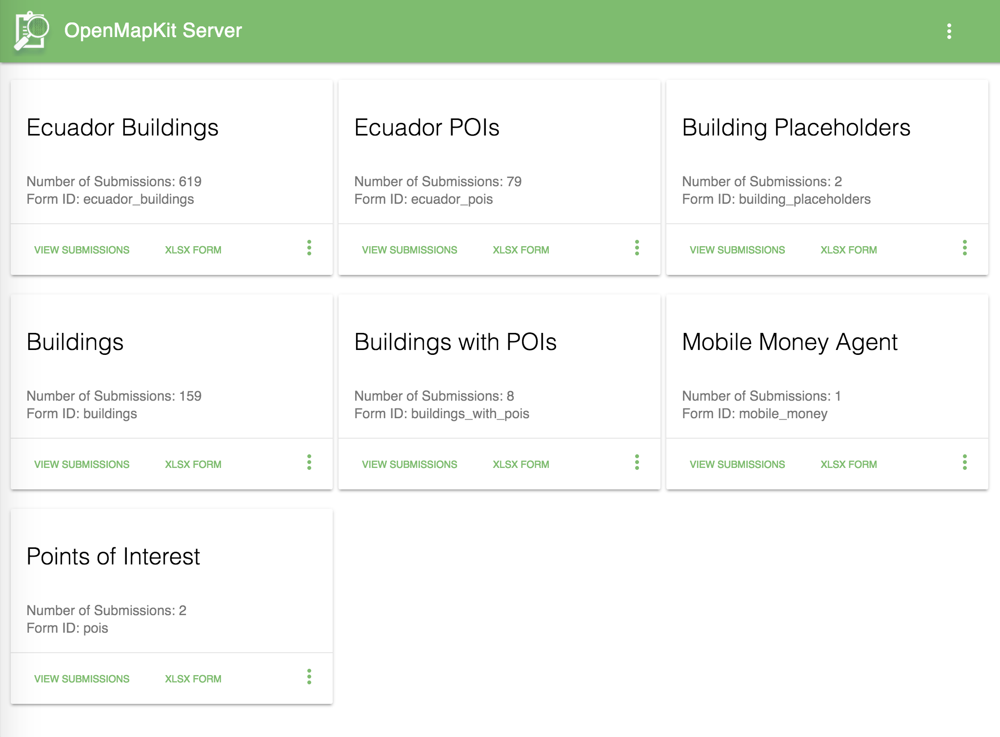
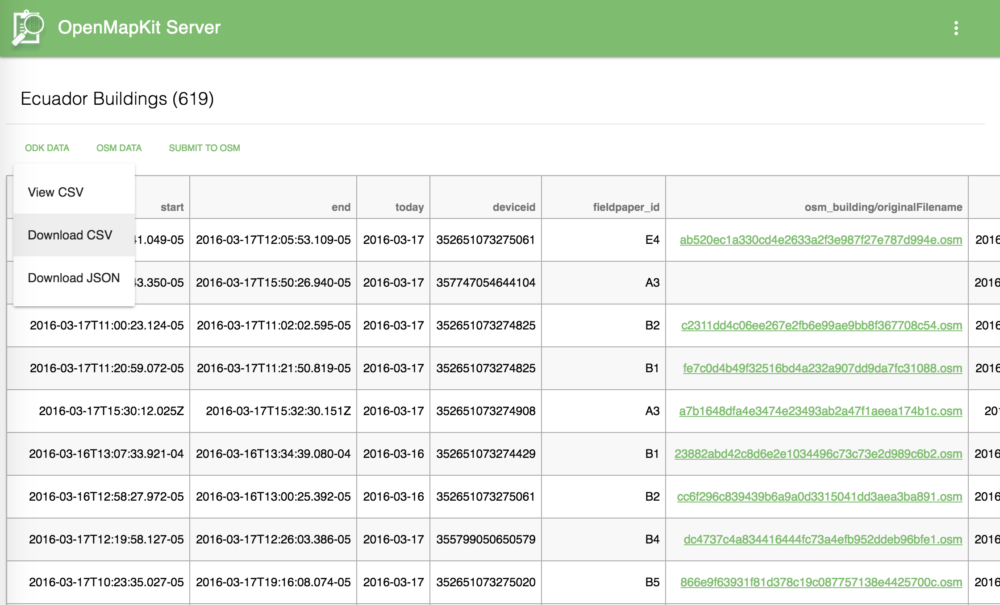
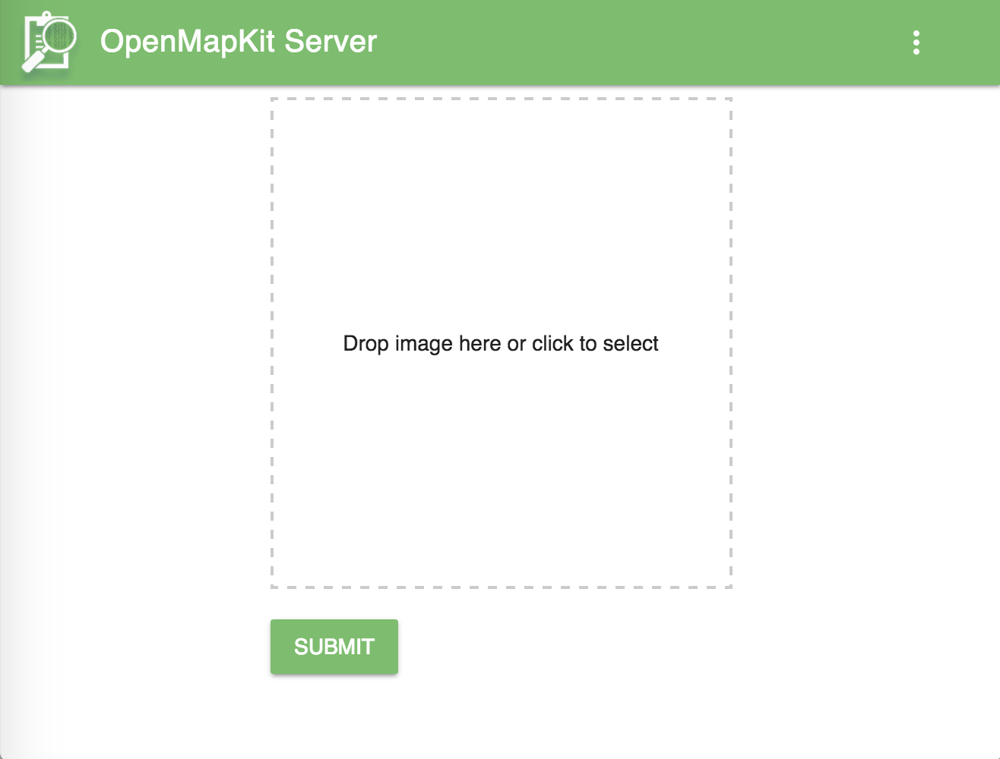
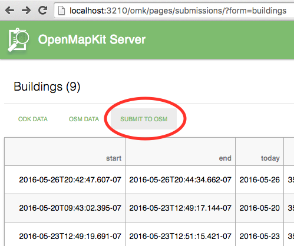
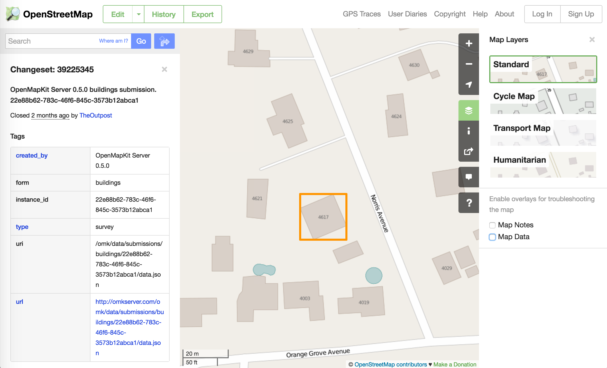
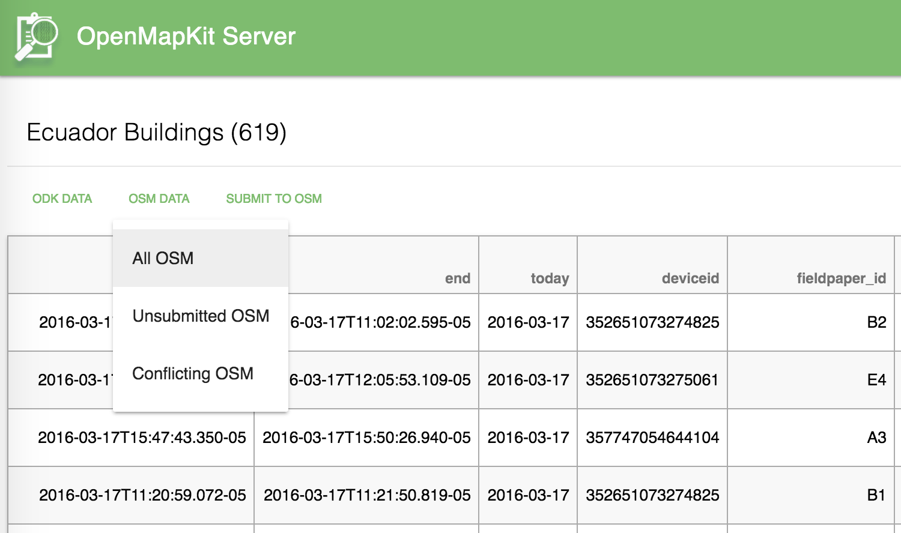

OpenMapKit Server
OpenMapKit Server
OpenMapKit Server is the lightweight NodeJS server component of OpenMapKit that handles the collection and aggregation of OpenStreetMap and OpenDataKit data.

This software is intended to run both on low-power embedded Linux systems, as well as on higher powered, cloud-based servers. It handles the collection of OpenStreetMap data from ODK Collect and OpenMapKit Android, allowing you to download edits as well as submit them to POSM or OpenStreetMap. It is an OpenRosa complient ODK Aggregate server, and it supports all data types that can be submitted from ODK Collect. It is an alternative to ODK Aggregate and Formhub, though this is the only option that supports OpenStreetMap integration with ODK data.
OpenMapKit Server is 100% database free! All data is persisted on the file system.
Several features include:
ODK Collect Submissions
OpenMapKit Server will collect XForm XML submissions from ODK Collect, including OSM XML attachments generated by OpenMapKit Android. All data is aggregated from the file system. XForm XML is converted to JSON for ease of use.
The data can be viewed or downloaded from the web application.

Upload XLS Forms
The questions asked in an ODK survey are in XForm XML format. It is easier, however, to create a survey in Excel or LibreOffice as an .xlsx file. By following the specified format of an XLS Form, you can upload a spreadsheet that defines a survey to OpenMapKit Server and have it converted to XForm XML automatically.

Synchronize OSM Data
As users submit their surveys from ODK Collect and OpenMapKit Android, OpenMapKit Server will automatically submit changesets of the incoming OSM data. Since OpenMapKit Android submits edits in JOSM OSM XML format, it is a straightforward process to create changesets and submit to any OSM API, including POSM.
You can also explicitly submit changesets, in case your OSM API was down, or you had to correct some data.

Once you have synchronized your OSM data, you can see your changeset metadata in OpenStreetMap. From OpenStreetMap, the metadata in your changeset refers back to the data URL in OpenMapKit Server.

I have a more in-depth guide explaining the changeset submission workflow on Github.
Download OSM Data
You can also take a more manual approach to synchronizing your OSM data. We also provide the ability to download the OSM data for the submissions in a form. This is in JOSM OSM XML format, so you can simply open the data in JOSM and do as you please.

More Information
More documentation is available on the OpenMapKit Server Github repo, as well as openmapkit.org.